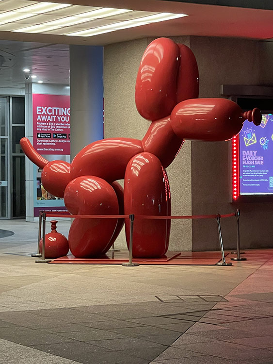
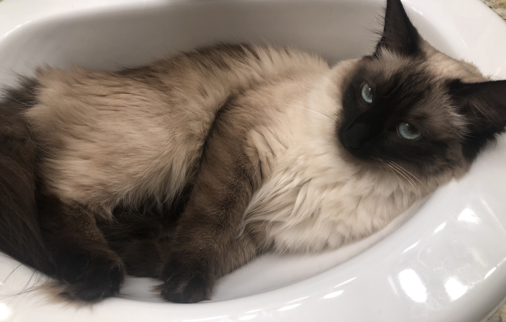

Reading the article it was surprising how the first best practice was connected to monetization. That aside, I liked the insight on the positioning. Additionally, I think his tip on utilizing a different closing button or delaying the X-button is useful. The rewarded videos function brought back memories of when I was in middle school and had no money yet was able to watch ads to advance in my game. Thus, I think this is a strategy I like although the specifics he mentioned differ from those of the creators of the game I play made. Lastly, I really connected with the author when he mentioned how designers sometimes use the 'rate us' dialogue too soon. This has happened to me and I definitely agree that it's not great since I usually do not have much experience with the product when asked.
Visual Thinking Analysis

Rosaamelia Cordova 2022
My aim with this image is to catch the user's interest with the comedic effect the photo provides. Additionally, this image to me is memorable because it was a photo I took while I was interning abroad in Singapore. This is a good image because my collection is about Singapore and what I saw there. My goal is to provide fun memories in a way that is also interesting for someone who does know the context behind the photos. Lastly, beyond what is shown in the photos and the collection title, I believe my collection will show some insight into my humor and how I connect ideas/visuals.

Annamaria 2023
The image from my peer is of a cat that appears to be relaxing in what appears to be a bathroom sink. I think one of the more interesting aspects of the photo is the fur pattern of the cat and how pretty its contrasting colors are. Another thing that stands out is the cat's blue-ish green eyes. This then brings attention to the cats expression that comes in part from the camera being positioned at a higher angle. The expression and camera angle make the cat appear endearing. To end, the most obvious thing about this images is that it is of a cat, and the most mysterious thing is the designer's intent and knowlege of the photo.
Visual Thinking Strategies Research
Michael Gonchar's article was really eye-opening and made me realized how interesting pictures can be. There were some that would quickly catch my attention and interest, like the one used in our project overview. It brings so much interest because you see a young kid caged up with an armed police officer. Learning how much effect a photo can have has made me want to change a few of the photos I had decided on for my project. I hope to find some that engage the thoughts of my users more.
As I was looking through websites, the Northdrive website caught my interest by the way they incorparate movement, zooming, and videos. I thought it was engaging because when you scrolled to the picture it would zoom out and assist in bringing it into focus in your eyes. Additionally, I enjoyed how after clicking on an image the whole screen would by a video.
Overlays Design Pattern Research
One helpful item Baskanderi's article provided was more insight of what parts to include when creating an overlay. These items include a descriptive title, size & location, escape hatch, a shadow (focus), a button label, and an action that leads to the pop-up activation. This is a helpful tool for someone who is shifting roles from a user to a designer because as the author mentioned, many users now find overlays annoying. Thus, as a user myself, I do not often pay attention to the designs of overlays as I fight to get them off my screen. I enjoyed how the author also directed some time to explain why modals do not work well in mobile. Overall, the article did a great job in helping me shift my views from a user to a designer and prepare myself for making overlays.
Best Practices for Form Design
As I readAnsari's article, I recalled how much I can love or hate filling out forms. Thus, I loved seeing the amount of thought the author put into the details of form design. One of my favorite parts of form design is the process of breaking up the amount of information displayed. I agree with the author who says it is best to break up the number of fields into steps and not display it all on one page. Additionally, as the author recommends, I think having a visual that tracks the progress until the completion of the form is excellent. I think this also allows the user to predict if they will have enough time to fill out the form or if they will have to do it at a later time.
The LinkedIn form for creating a profile exemplifies a few good practices. To begin, they only ask for the necessary fields like email and password to join. Additionally, they explain the formatting requirements format the password and provide a show password option. After, providing this info you can click join and go to a field that asks for your first and last name before continuing. Thus, they are breaking down the information they ask for per page to minimize the cognitive load on the user. I think this is another demonstration of best practices.